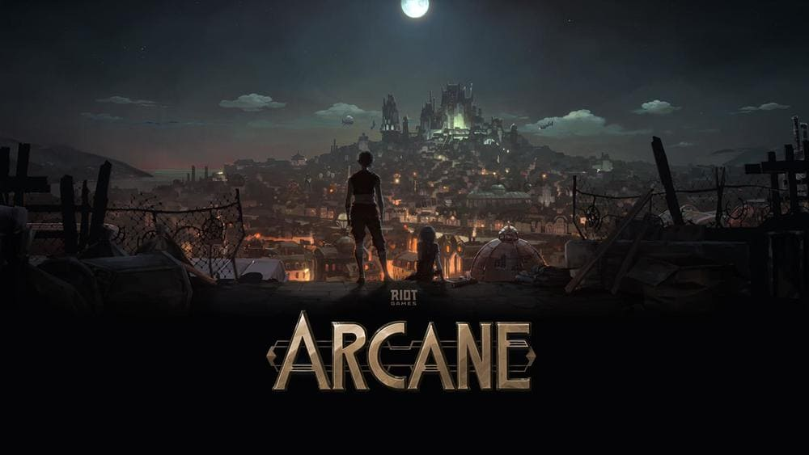
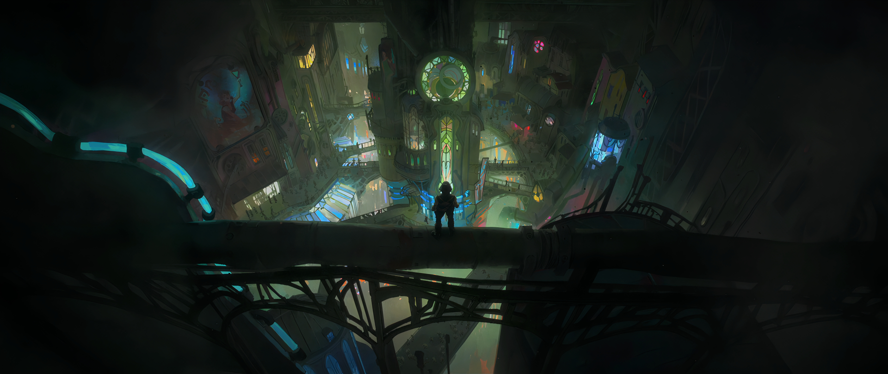

《奧術》（Arcane）動畫影集改編自拳頭遊戲公司（Riot Games）的電子遊戲《英雄聯盟》（League of Legends，簡稱LoL），分為三章，2021年11月6日起，開始於Netflix線上播出。劇情主要講述符文大地中，「皮爾托福」（Piltover）和「佐恩」（Zaun）共生的兩座城市（故事的主要場景）仇恨，菲艾、吉茵珂絲、杰西、凱特琳等英雄角色的起源及成長，並因新科技的魔法，改變了她們的人生。
《奧術》故事主要圍繞在「皮爾托福」和「佐恩」共生的兩座城市恩怨，而這只是《英雄聯盟》符文大地中的一部分，在遊戲故事中的設定，符文大地是由許多國家與城邦所組成的世界，彼此的政治實體是對立的局面，故事中衝突最大的兩個城邦是蒂瑪西亞和諾克薩斯。《奧術》從皮爾托福和佐恩兩個研究高科技的共生城市說起，也等於是揭開《英雄聯盟》宇宙的序曲。這部動畫在中國市場譯為《英雄聯盟：雙城之戰》，亦可看出劇中聚焦兩城的世界。
皮爾托福是《奧術》中，上城繁榮的城市，是《英雄聯盟》在瓦羅然大陸的文化中心，地理位置在底城佐恩上方的峽谷中，對著海岸，商業貿易興盛，成了追逐財富的夢想之地，全世界的頂級工匠會來到皮爾托福尋求資金贊助，像杰西即是得到資助，才有研究科技的環境。
相較皮爾托福的進步，佐恩則是藏污納垢，皮爾托福的垃圾及不光明的一面，全來到底層，佐恩如黑市般的陰暗，所有皮爾托福走私、犯罪等檯面下的事，都來在此發生。隨著兩座城市各自研發科技，皮爾托福有了「奧術」魔法力量的「海克斯科技」出現，佐恩則是出現「微光」的藥物，可將人的力量增強如怪物般的暴力。兩城在彼此不對等的發展及過往埋下的仇恨因子下，終於爆發衝突。
Copyright © 2022 Yanlin. All rights reserved.